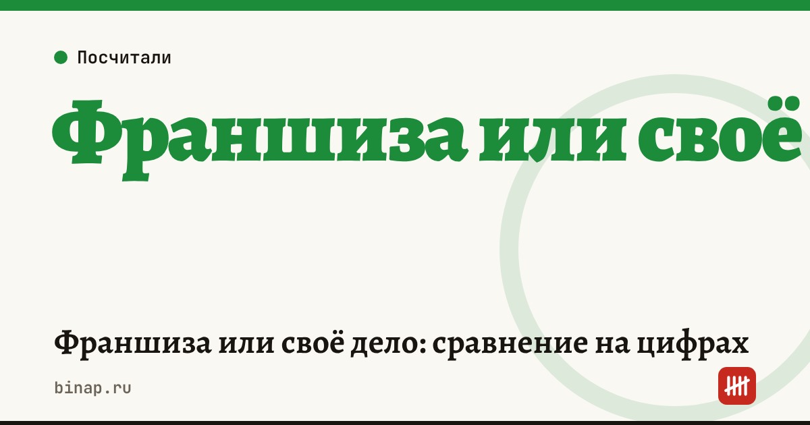

Франшиза или своё дело: сравнение на цифрах

Франшиза продаёт не только бренд, но и готовую схему: поставщиков, стандарты, обучение, иногда поток клиентов. За это платят дважды — паушальным взносом на входе и роялти каждый месяц. Своё дело дешевле на старте, но всё это придётся строить самому и платить ошибками. Ниже — как сравнить два варианта на одних и тех же цифрах.
Коротко
- Сравнивайте не стоимость входа, а прибыль за 2–3 года: роялти съедает часть маржи каждый месяц.
- Франшиза оправдана, если она даёт то, чего у вас нет: узнаваемый бренд, закупочные цены, отлаженный процесс, клиентов.
- Своё дело выигрывает, если вы знаете рынок и готовы потратить 3–6 месяцев на отладку.
- Главный риск франшизы — франчайзер, который зарабатывает на продаже франшиз, а не на работе точек.
- Расчёт ниже — пример редакции на условных цифрах, свои подставьте в калькулятор.
Сроки, изменения и разборы для ИП и самозанятых — каждое утро в Telegram и MAX. Подпишитесь, чтобы не пропустить.
Из чего складываются расходы
| Статья | Франшиза | Своё дело |
|---|---|---|
| Вход | паушальный взнос | разработка бренда, сайта, поиск поставщиков |
| Запуск точки | ремонт и оборудование по стандарту франчайзера | ремонт и оборудование на ваш выбор |
| Каждый месяц | роялти (процент от выручки или фиксированная сумма), маркетинговый сбор | своя реклама |
| Скрытые | обязательные закупки у франчайзера, штрафы за нарушение стандартов | ошибки первых месяцев, время на отладку |
Пример: три года работы
Расчёт редакции на условных цифрах. Точка с одинаковыми расходами на запуск — 2 млн ₽. Франшиза: паушальный взнос 500 000 ₽, роялти 5% от выручки. Своё дело: 300 000 ₽ на бренд и отладку, но первые 6 месяцев выручка на 30% ниже.
| Франшиза | Своё дело | |
|---|---|---|
| Вложения на старте | 2 500 000 ₽ | 2 300 000 ₽ |
| Выручка в месяц | 800 000 ₽ | 560 000 ₽ первые 6 месяцев, потом 800 000 ₽ |
| Маржинальный доход до роялти, 35% выручки | 280 000 ₽ | 196 000 ₽, потом 280 000 ₽ |
| Роялти 5% | 40 000 ₽ | — |
| Постоянные расходы в месяц | 180 000 ₽ | 180 000 ₽ |
| Прибыль в месяц | 60 000 ₽ | 16 000 ₽, потом 100 000 ₽ |
| Прибыль за 36 месяцев | 2 160 000 ₽ | 3 096 000 ₽ |
| Окупаемость | около 42 месяцев | около 28 месяцев |
Расчёт для своего дела: 16 000 × 6 + 100 000 × 30 = 3 096 000 ₽. Окупаемость своего дела: за первые 6 месяцев вернулось 96 000 ₽, остаток 2 204 000 ₽ ÷ 100 000 ₽ ≈ 22 месяца, всего около 28 месяцев. В этом примере роялти 40 000 ₽ в месяц делают франшизу менее выгодной, если бренд не даёт выручки выше. Но если франшиза приносит хотя бы на 15% больше выручки (920 000 ₽ вместо 800 000 ₽), прибыль в месяц вырастет до 96 000 ₽ — и разница почти исчезнет.
Вывод: сравнивайте франшизу по выручке её работающих точек, а не по обещаниям в презентации.
Чек-лист перед выбором
- Попросите у франчайзера отчётность 3–5 действующих точек и поговорите с их владельцами без франчайзера. Как это сделать — в статье Как проверить франчайзера: 12 пунктов.
- Посчитайте оба варианта по одним цифрам в калькуляторе окупаемости франшизы: поставьте роялти 0 и свою выручку для варианта «своё дело».
- Выпишите, что именно даёт франшиза — закупки, бренд, обучение, IT-система — и прикиньте, сколько это стоило бы вам самому.
- Проверьте договор: обязательные закупки, территория, штрафы, порядок выхода.
- Учтите налоги: как учитывать паушальный взнос и роялти на УСН — в статье Паушальный взнос и роялти: учёт на УСН. Все материалы — в разделе Франчайзи.
Частые вопросы
Франшиза всегда безопаснее своего дела? Нет. Она снижает риск ошибок в процессах, но добавляет риск франчайзера и постоянный платёж — роялти.
Как понять, что роялти оправдано? Сравните прибыль с роялти и без него при той выручке, которую реально дают точки сети. Если разница в выручке покрывает роялти — франшиза окупает себя.
Можно ли открыться по франшизе как ИП? Да, большинство франчайзеров работают с ИП. Уточните требования конкретной сети.